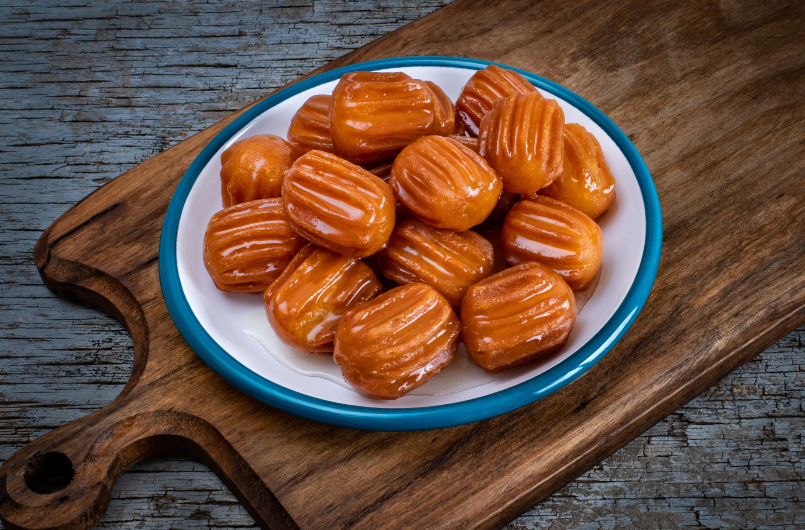

Tulumba
<<<<<<< HEAD

=======
 >>>>>>> 9b5f96e1aeab002b5436698a9dd43afb03f19020
>>>>>>> 9b5f96e1aeab002b5436698a9dd43afb03f19020
The most delicous tulumba!
Before we start make sure you have eggs and sugar at home
Ingredients:
- Bring 2 cups of water and 6 tablespoons oil to a boil in a large pot over high heat. Remove from heat and stir in flour and baking powder until well combined. Allow to cool, 15 to 20 minutes.
- add eggs one by one and make sure the mixture is smooth!
- Meanwhile prepare the syrup by combining sugar and 2 cups water in a saucepan and boil it over medium-high heat. Stir until sugar has dissolved.
- While syrup cools, heat oil in a deep-fryer or large saucepan
- Spoon dough into a tulumba syringe or an icing bag with a special nozzle and pipe small portions of dough into the hot oil. You can also drop spoonfuls of dough into the hot oil, but then the tulumbas won't have the traditional shape. Work in batches and fry tulumbas until golden, 5 to 7 minutes. Remove to a paper towel-lined plate. Let cool, about 10 minutes. Transfer tulumbas to a bowl and pour cooled syrup on top. Allow to soak for at least 2 hours.